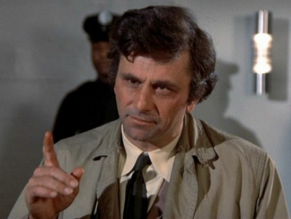

Lt. Columbo was a Los Angeles detective, portrayed by actor Peter Falk between 1968 and 2003 and the television show “Columbo.” Columbo’s investigations almost always revolve around the rich and famous of L.A. He solves cases not by abusing people, but by using his wits. He would make suspects think he was a simpleton fool until his classic “Just one more thing…” question would reveal them as the criminal that they always were!
Maybe this table comparing the two will help:
| Did he... | Christopher Columbus | Lt. Columbo |
|---|---|---|
| massacre thousands of people? | Yes | No |
| enslave people? | Yes | No |
| take part in sex trafficking? | Yes | No |
| solve criminal cases? | No | Yes |
| discover America? | No | No |
| prove the Earth is round? | No | No |
| drive a 1959 Peugeot 403 convertible? | No | Yes |